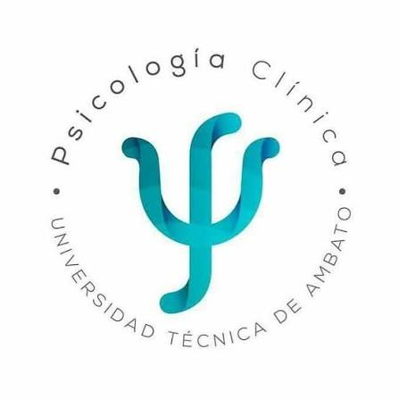

Facultad de Ciencias de la Salud · Carrera de Psicología Clínica · 1.er nivel · Julio–Diciembre 2026
Tecnologías de la Información y la Comunicación
Tutor de estudio sobre comunicación, herramientas colaborativas, búsqueda científica, hojas de cálculo y contenidos multimedia con IA aplicados a la Psicología Clínica.

Toca una ficha para ver la definición. Úsalas para repasar antes de un taller o de una evaluación.